- 00 学习指南 如何学习这门编译原理实战课？.md.html
- 00 开篇词 在真实世界的编译器中游历.md.html
- 01 编译的全过程都悄悄做了哪些事情？.md.html
- 02 词法分析：用两种方式构造有限自动机.md.html
- 03 语法分析：两个基本功和两种算法思路.md.html
- 04 语义分析：让程序符合语义规则.md.html
- 05 运行时机制：程序如何运行，你有发言权.md.html
- 06 中间代码：不是只有一副面孔.md.html
- 07 代码优化：跟编译器做朋友，让你的代码飞起来.md.html
- 08 代码生成：如何实现机器相关的优化？.md.html
- 09 Java编译器（一）：手写的编译器有什么优势？.md.html
- 10 Java编译器（二）：语法分析之后，还要做些什么？.md.html
- 11 Java编译器（三）：属性分析和数据流分析.md.html
- 12 Java编译器（四）：去除语法糖和生成字节码.md.html
- 13 Java JIT编译器（一）：动手修改Graal编译器.md.html
- 14 Java JIT编译器（二）：Sea of Nodes为何如此强大？.md.html
- 15 Java JIT编译器（三）：探究内联和逃逸分析的算法原理.md.html
- 16 Java JIT编译器（四）：Graal的后端是如何工作的？.md.html
- 17 Python编译器（一）：如何用工具生成编译器？.md.html
- 18 Python编译器（二）：从AST到字节码.md.html
- 19 Python编译器（三）：运行时机制.md.html
- 20 JavaScript编译器（一）：V8的解析和编译过程.md.html
- 21 JavaScript编译器（二）：V8的解释器和优化编译器.md.html
- 22 Julia编译器（一）：如何让动态语言性能很高？.md.html
- 23 Julia编译器（二）：如何利用LLVM的优化和后端功能？.md.html
- 24 Go语言编译器：把它当作教科书吧.md.html
- 25 MySQL编译器（一）：解析一条SQL语句的执行过程.md.html
- 26 MySQL编译器（二）：编译技术如何帮你提升数据库性能？.md.html
- 27 课前导读：学习现代语言设计的正确姿势.md.html
- 28 前端总结：语言设计也有人机工程学.md.html
- 29 中端总结：不遗余力地进行代码优化.md.html
- 30 后端总结：充分发挥硬件的能力.md.html
- 31 运行时（一）：从0到语言级的虚拟化.md.html
- 32 运行时（二）：垃圾收集与语言的特性有关吗？.md.html
- 33 并发中的编译技术（一）：如何从语言层面支持线程？.md.html
- 34 并发中的编译技术（二）：如何从语言层面支持协程？.md.html
- 35 并发中的编译技术（三）：Erlang语言厉害在哪里？.md.html
- 36 高级特性（一）：揭秘元编程的实现机制.md.html
- 37 高级特性（二）：揭秘泛型编程的实现机制.md.html
- 38 综合实现（一）：如何实现面向对象编程？.md.html
- 39 综合实现（二）：如何实现函数式编程？.md.html
- 40 成果检验：方舟编译器的优势在哪里？.md.html
- 不定期加餐1 远程办公，需要你我具备什么样的素质？.md.html
- 不定期加餐2 学习技术的过程，其实是训练心理素质的过程.md.html
- 不定期加餐3 这几年，打动我的两本好书.md.html
- 不定期加餐4 从身边的牛人身上，我学到的一些优秀品质.md.html
- 不定期加餐5 借助实例，探究C++编译器的内部机制.md.html
- 划重点 7种编译器的核心概念与算法.md.html
- 期末答疑与总结 再次审视学习编译原理的作用.md.html
- 热点问题答疑 如何吃透7种真实的编译器？.md.html
- 用户故事 易昊：程序员不止有Bug和加班，还有诗和远方.md.html
- 知识地图 一起来复习编译技术核心概念与算法.md.html
- 结束语 实战是唯一标准！.md.html
- 捐赠
18 Python编译器（二）：从AST到字节码
你好，我是宫文学。
今天这一讲，我们继续来研究Python的编译器，一起来看看它是如何做语义分析的，以及是如何生成字节码的。学完这一讲以后，你就能回答出下面几个问题了：
- 像Python这样的动态语言，在语义分析阶段都要做什么事情呢，跟Java这样的静态类型语言有什么不同？
- Python的字节码有什么特点？生成字节码的过程跟Java有什么不同？
好了，让我们开始吧。首先，我们来了解一下从AST到生成字节码的整个过程。
编译过程
Python编译器把词法分析和语法分析叫做“解析（Parse）”，并且放在Parser目录下。而从AST到生成字节码的过程，才叫做“编译（Compile）”。当然，这里编译的含义是比较狭义的。你要注意，不仅是Python编译器，其他编译器也是这样来使用这两个词汇，包括我们已经研究过的Java编译器，你要熟悉这两个词汇的用法，以便阅读英文文献。
Python的编译工作的主干代码是在Python/compile.c中，它主要完成5项工作。
第一步，检查future语句。future语句是Python的一个特性，让你可以提前使用未来版本的特性，提前适应语法和语义上的改变。这显然会影响到编译器如何工作。比如，对于“8/7”，用不同版本的语义去处理，得到的结果是不一样的。有的会得到整数“1”，有的会得到浮点数“1.14285…”，编译器内部实际上是调用了不同的除法函数。
第二步，建立符号表。
第三步，为基本块产生指令。
第四步，汇编过程：把所有基本块的代码组装在一起。
第五步，对字节码做窥孔优化。
其中的第一步，它是Python语言的一个特性，但不是我们编译技术关注的重点，所以这里略过。我们从建立符号表开始。
语义分析：建立符号表和引用消解
通常来说，在语义分析阶段首先是建立符号表，然后在此基础上做引用消解和类型检查。
而Python是动态类型的语言，类型检查应该是不需要了，但引用消解还是要做的。并且你会发现，Python的引用消解有其独特之处。
首先，我们来看看Python的符号表是一个什么样的数据结构。在Include/symtable.h中定义了两个结构，分别是符号表和符号表的条目：
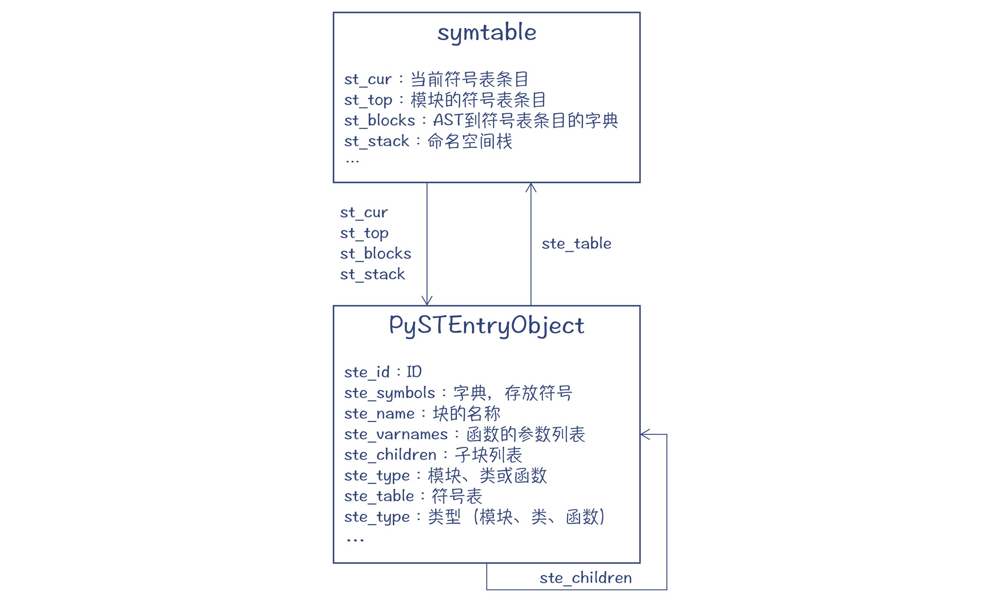
图1：符号表和符号表条目
在编译的过程中，针对每个模块（也就是一个Python文件）会生成一个符号表（symtable）。
Python程序被划分成“块（block）”，块分为三种：模块、类和函数。每种块其实就是一个作用域，而在Python里面还叫做命名空间。每个块对应一个符号表条目（PySTEntryObject），每个符号表条目里存有该块里的所有符号（ste_symbols）。每个块还可以有多个子块（ste_children），构成树状结构。
在符号表里，有一个st_blocks字段，这是个字典，它能通过模块、类和函数的AST节点，查找到Python程序的符号表条目，通过这种方式，就把AST和符号表关联在了一起。
我们来看看，对于下面的示例程序，它对应的符号表是什么样子的。
a = 2 #模块级变量
class myclass:
def __init__(self, x):
self.x = x
def foo(self, b):
c = a + self.x + b #引用了外部变量a
return c
这个示例程序有模块、类和函数三个级别的块。它们分别对应一条符号表条目。
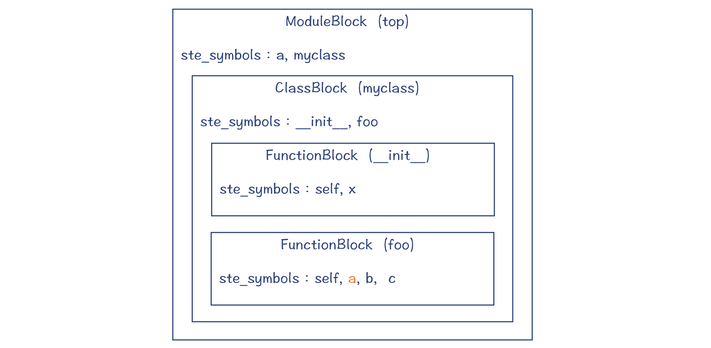
图2：示例程序对应的符号表
你可以看到，每个块里都有ste_symbols字段，它是一个字典，里面保存了本命名空间涉及的符号，以及每个符号的各种标志位（flags）。关于标志位，我下面会给你解释。
然后，我们再看看针对这个示例程序，符号表里的主要字段的取值：
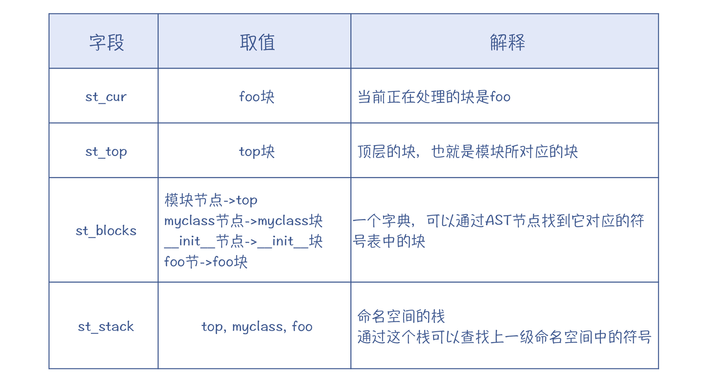
好了，通过这样一个例子，你大概就知道了Python的符号表是怎样设计的了。下面我们来看看符号表的建立过程。
建立符号表的主程序是Python/symtable.c中的PySymtable_BuildObject()函数。
Python建立符号表的过程，需要做两遍处理，如下图所示。
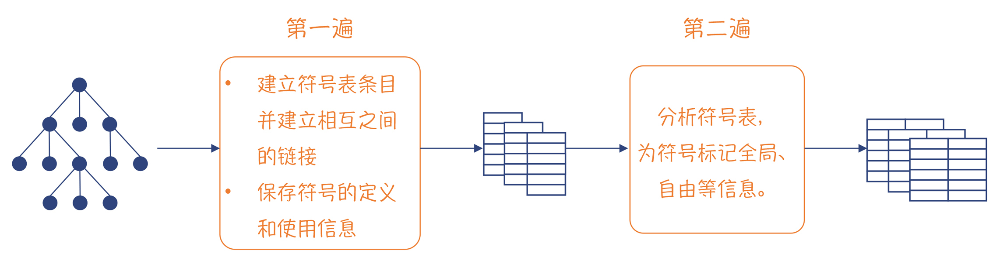
图3：Python建立符号表的过程
第一遍，主要做了两件事情。第一件事情是建立一个个的块（也就是符号表条目），并形成树状结构，就像示例程序那样；第二件事情，就是给块中的符号打上一定的标记（flag）。
我们用GDB跟踪一下第一遍处理后生成的结果。你可以参考下图，看一下我在Python的REPL中的输入信息：
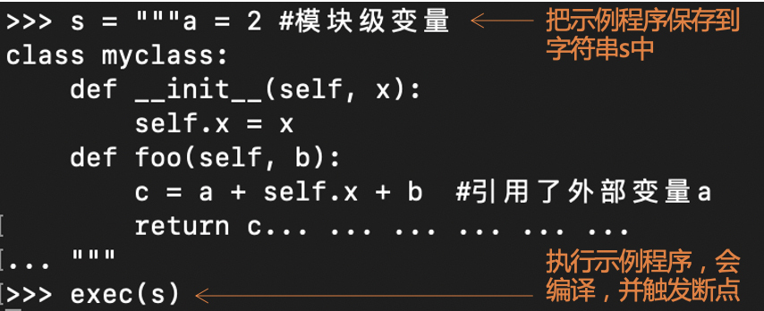
我在symtable_add_def_helper()函数中设置了断点，便于调试。当编译器处理到foo函数的时候，我在GDB中打印输出了一些信息：
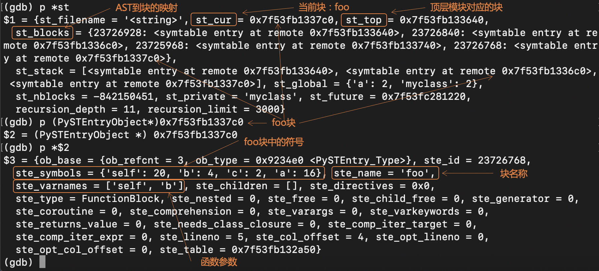
在这些输出信息中，你能看到前面我给你整理的表格中的信息，比如，符号表中各个字段的取值。
我重点想让你看的，是foo块中各个符号的标志信息：self和b是20，c是2，a是16。这是什么意思呢？
ste_symbols = {'self': 20, 'b': 20, 'c': 2, 'a': 16}
这就需要看一下symtable.h中，对这些标志位的定义：
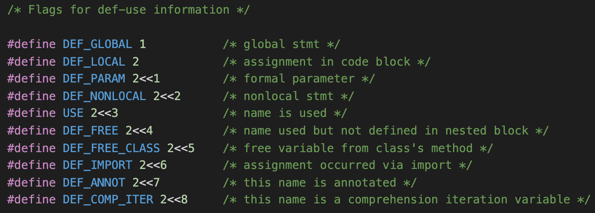
我给你整理成了一张更容易理解的图，你参考一下：
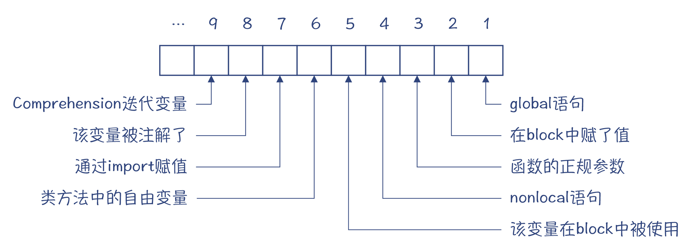
图4：符号标志信息中每个位的含义
根据上述信息，你会发现self和b，其实是被标记了3号位和5号位，意思是这两个变量是函数参数，并且在foo中被使用。而a只标记了5号位，意思是a这个变量在foo中被使用，但这个变量又不是参数，所以肯定是来自外部作用域的。我们再看看c，c只在2号位被标记，表示这个变量在foo里被赋值了。
到目前为止，第一遍处理就完成了。通过第一遍处理，我们会知道哪些变量是本地声明的变量、哪些变量在本块中被使用、哪几个变量是函数参数等几方面的信息。
但是，现在还有一些信息是不清楚的。比如，在foo中使用了a，那么外部作用域中是否有这个变量呢？这需要结合上下文做一下分析。
还有，变量c是在foo中赋值的。那它是本地变量，还是外部变量呢？
在这里，你能体会出Python语言使用变量的特点：由于变量在赋值前，可以不用显式声明。所以你不知道这是新声明了一个变量，还是引用了外部变量。
正由于Python的这个特点，所以它在变量引用上有一些特殊的规定。
比如，想要在函数中给全局变量赋值，就必须加global关键字，否则编译器就会认为这个变量只是一个本地变量。编译器会给这个符号的1号位做标记。
而如果给其他外部作用域中的变量赋值，那就必须加nonlocal关键字，并在4号位上做标记。这时候，该变量就是一个自由变量。在闭包功能中，编译器还要对自由变量的存储做特殊的管理。
接下来，编译器会做第二遍的分析（见symtable_analyze()函数）。在这遍分析里，编译器会根据我们刚才说的Python关于变量引用的语义规则，分析出哪些是全局变量、哪些是自由变量，等等。这些信息也会被放到符号的标志位的第12~15位。
ste_symbols = {'self': 2068, 'b': 2068, 'c': 2050, 'a': 6160}
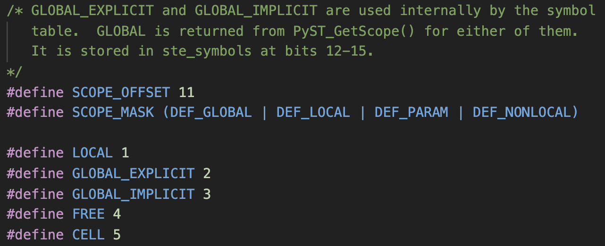
图5：symtable.h中对作用域的标志位
以变量a为例，它的标志值是6160，也就是二进制的1100000010000。其标记位设置如下，其作用域的标志位是3，也就是说，a是个隐式的全局变量。而self、b和c的作用域标志位都是1，它们的意思是本地变量。
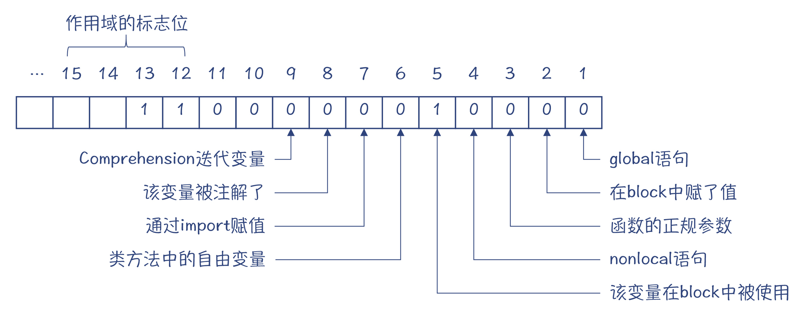
图6：作用域的标志位
在第二遍的分析过程中，Python也做了一些语义检查。你可以搜索一下Python/symtable.c的代码，里面有很多地方会产生错误信息，比如“nonlocal declaration not allowed at module level（在模块级不允许非本地声明）”。
另外，Python语言提供了访问符号表的API，方便你直接在REPL中，来查看编译过程中生成的符号表。你可以参考我的屏幕截图：
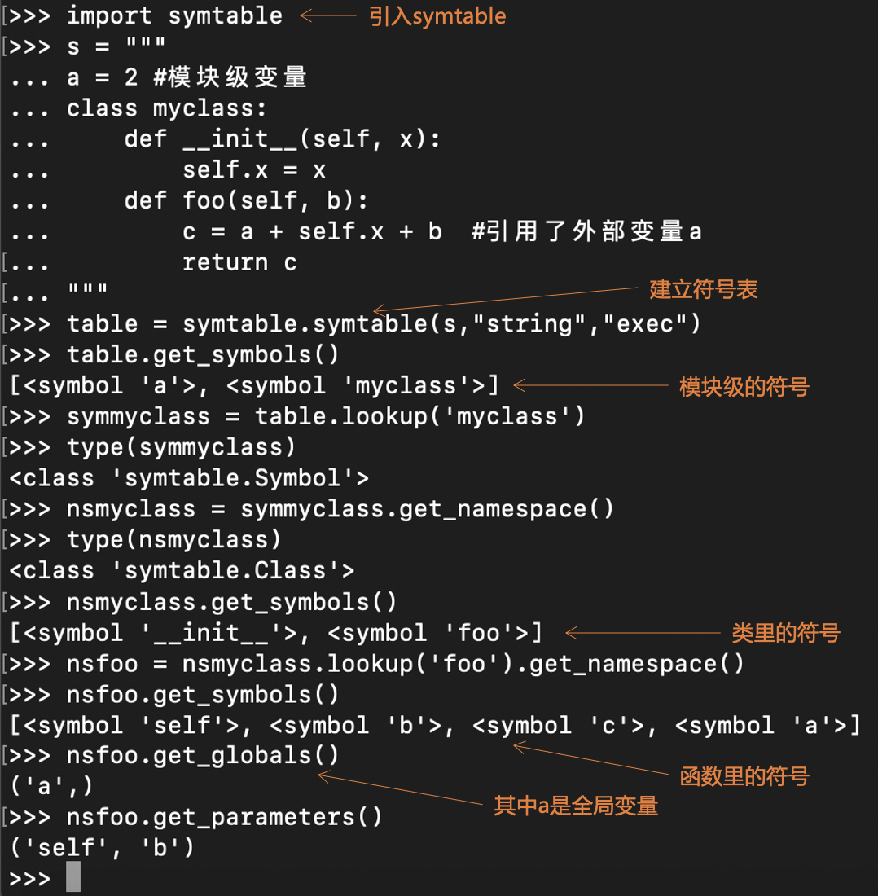
好了，现在符号表已经生成了。基于AST和符号表，Python编译器就可以生成字节码。
生成CFG和指令
我们可以用Python调用编译器的API，来观察字节码生成的情况：
>>> co = compile("a+2", "test.py", "eval") //编译表达式"a+2"
>>> dis.dis(co.co_code) //反编译字节码
0 LOAD_NAME 0 (0) //装载变量a
2 LOAD_CONST 0 (0) //装载常数2
4 BINARY_ADD //执行加法
6 RETURN_VALUE //返回值
其中的LOAD_NAME、LOAD_CONST、BINARY_ADD和RETURN_VALUE都是字节码的指令。
对比一下，Java的字节码的每个指令只有一个字节长，这意味着指令的数量不会超过2的8次方（256）个。
Python的指令一开始也是一个字节长的，后来变成了一个字（word）的长度，但我们仍然习惯上称为字节码。Python的在线文档里有对所有字节码的说明，这里我就不展开了，感兴趣的话你可以自己去看看。
并且，Python和Java的虚拟机一样，都是基于栈的虚拟机。所以，它们的指令也很相似。比如，加法操作的指令是不需要带操作数的，因为只需要取出栈顶的两个元素相加，把结果再放回栈顶就行了。
进一步，你可以对比一下这两种语言的字节码，来看看它们的异同点，并且试着分析一下原因。
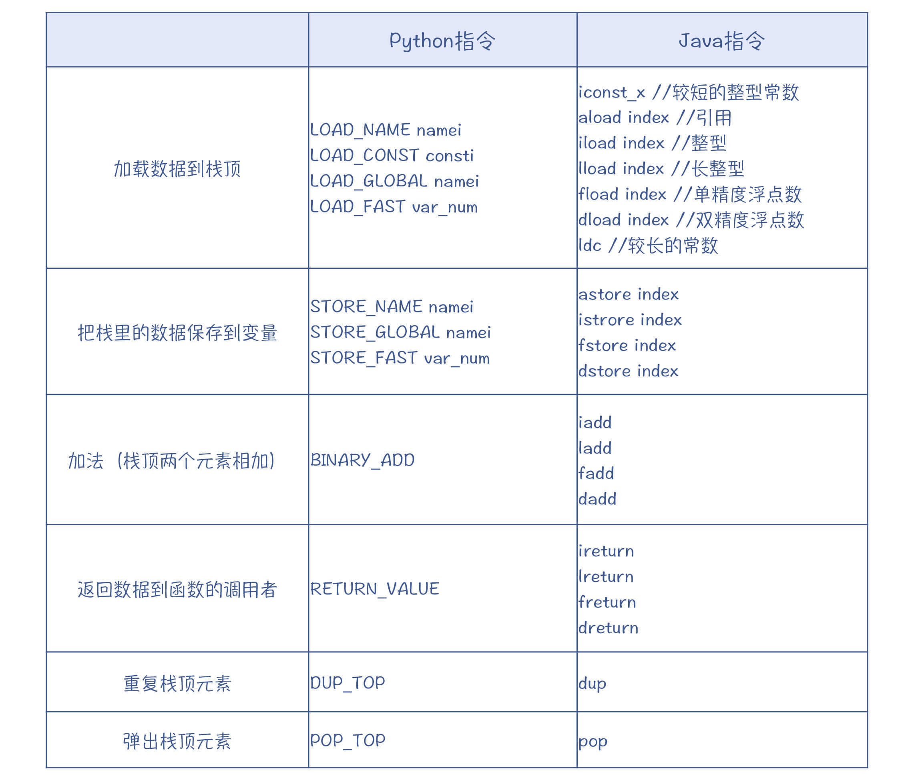
这样对比起来，你可以发现，它们主要的区别就在于，Java的字节码对不同的数据类型会提供不同的指令，而Python则不加区分。因为Python对所有的数值，都会提供统一的计算方式。
所以你可以看出，一门语言的IR，是跟这门语言的设计密切相关的。
生成CFG和字节码的代码在Python/compile.c中。调用顺序如下：
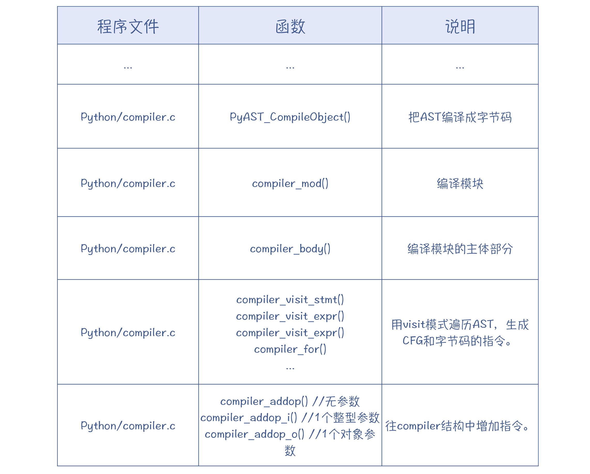
总的逻辑是：以visit模式遍历整个AST，并建立基本块和指令。对于每种AST节点，都由相应的函数来处理。
以compiler_visit_expr1()为例，对于二元操作，编译器首先会递归地遍历左侧子树和右侧子树，然后根据结果添加字节码的指令。
compiler_visit_expr1(struct compiler *c, expr_ty e)
{
switch (e->kind) {
...
.
case BinOp_kind:
VISIT(c, expr, e->v.BinOp.left); //遍历左侧子树
VISIT(c, expr, e->v.BinOp.right); //遍历右侧子树
ADDOP(c, binop(c, e->v.BinOp.op)); //添加二元操作的指令
break;
...
}
那么基本块是如何生成的呢？
编译器在进入一个作用域的时候（比如函数），至少要生成一个基本块。而像循环语句、if语句，还会产生额外的基本块。
所以，编译的结果，会在compiler结构中保存一系列的基本块，这些基本块相互连接，构成CFG；基本块中又包含一个指令数组，每个指令又包含操作码、参数等信息。
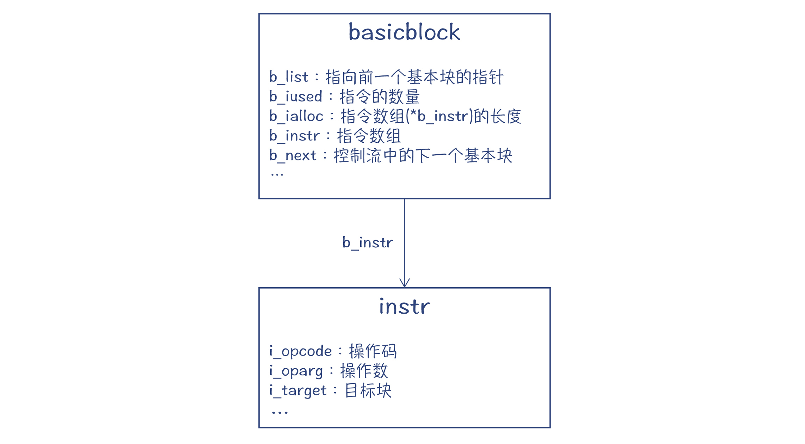
图7：基本块和指令
为了直观理解，我设计了一个简单的示例程序。foo函数里面有一个if语句，这样会产生多个基本块。
def foo(a):
if a > 10 :
b = a
else:
b = 10
return b
通过GDB跟踪编译过程，我们发现，它生成的CFG如下图所示：
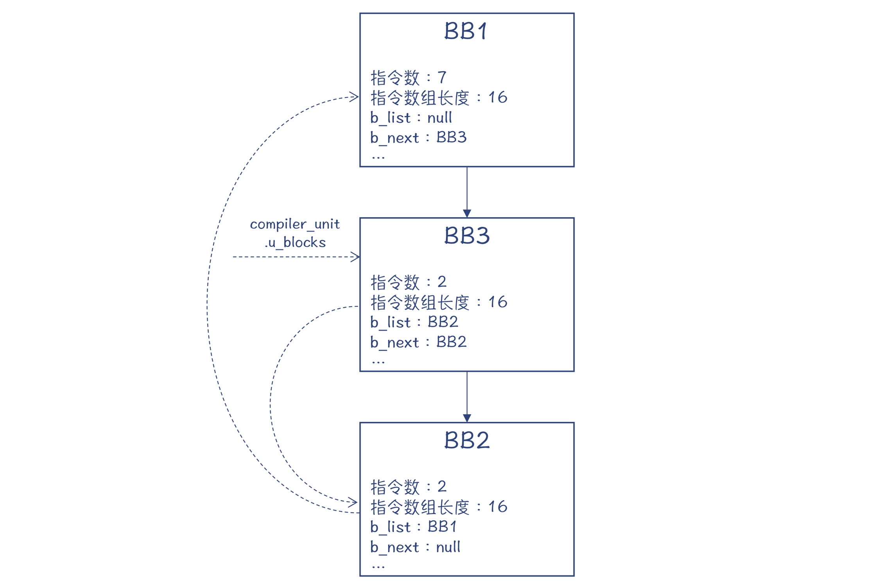
图8：示例程序对应的CFG
在CFG里，你要注意两组箭头。
实线箭头是基本块之间的跳转关系，用b_next字段来标记。虚线箭头能够基于b_list字段把所有的基本块串起来，形成一个链表，每一个新生成的基本块指向前一个基本块。只要有一个指针指向最后一个基本块，就能访问所有的基本块。
你还可以通过GDB来查看每个基本块中的指令分别是什么，这样你就会理解每个基本块到底干了啥。不过我这里先给你留个小伏笔，在下一个小节讲汇编的时候一起给你介绍。
到目前为止，我们已经生成了CFG和针对每个基本块的指令数组。但我们还没有生成最后的字节码。这个任务，是由汇编（Assembly）阶段负责的。
汇编（Assembly）
汇编过程是在Python/compiler.c中的assemble()函数中完成的。听名字，你会感觉这个阶段做的事情似乎应该比较像汇编语言的汇编器的功能。也确实如此。汇编语言的汇编器，能够生成机器码；而Python的汇编阶段，是生成字节码，它们都是生成目标代码。
具体来说，汇编阶段主要会完成以下任务：
- 把每个基本块的指令对象转化成字节码。
- 把所有基本块的字节码拼成一个整体。
- 对于从一个基本块跳转到另一个基本块的jump指令，它们有些采用的是相对定位方式，比如往前跳几个字的距离。这个时候，编译器要计算出正确的偏移值。
- 生成PyCodeObject对象，这个对象里保存着最后生成的字节码和其他辅助信息，用于Python的解释器执行。
我们还是通过示例程序，来直观地看一下汇编阶段的工作成果。你可以参照下图，使用instaviz工具看一下foo函数的编译结果。
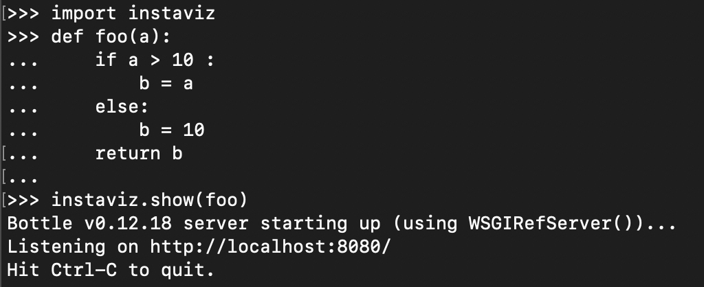
在PyCodeObject对象中，co_code字段是生成的字节码（用16进制显示）。你还能看到常量表和变量表，这些都是在解释器中运行所需要的信息。
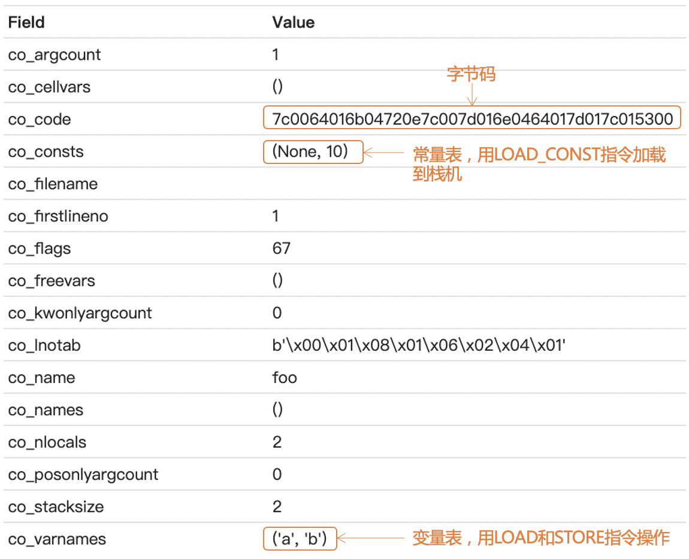
如果把co_code字段的那一串字节码反编译一下，你会得到下面的信息：
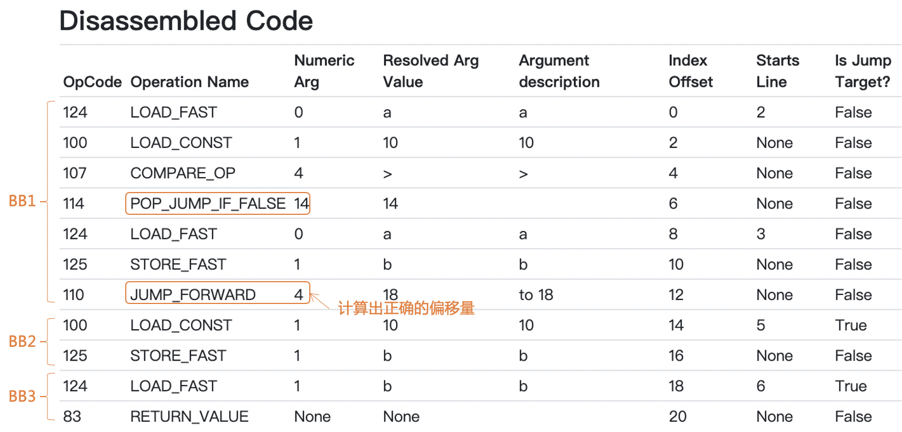
你会看到，一共11条指令，其中BB1是7条，BB2和BB3各2条。BB1里面是If条件和if块中的内容，BB2对应的是else块的内容，BB3则对应return语句。
不过，如果你对照基本块的定义，你其实会发现，BB1不是一个标准的基本块。因为一般来说，标准的基本块只允许在最后一个语句做跳转，其他语句都是顺序执行的。而我们看到第4个指令“POP_JUMP_IF_FALSE 14”其实是一个条件跳转指令。
尽管如此，因为Python把CFG只是作为生成字节码的一个中间结构，并没有基于CFG做数据流分析和优化，所以虽然基本块不标准，但是对Python的编译过程并无影响。
你还会注意到第7行指令“JUMP_FORWARD”，这个指令是一个基于相对位置的跳转指令，它往前跳4个字，就会跳到BB3。这个跳转距离就是在assemble阶段去计算的，这个距离取决于你如何在代码里排列各个基本块。
好了，到目前为止，字节码已经生成了。不过，在最后放到解释器里执行之前，编译器还会再做一步窥孔优化工作。
窥孔优化
说到优化，总体来说，在编译的过程中，Python编译器的优化功能是很有限的。在compiler.c的代码中，你会看到一点优化逻辑。比如，在为if语句生成指令的时候，编译器就会看看if条件是否是个常数，从而不必生成if块或者else块的代码。
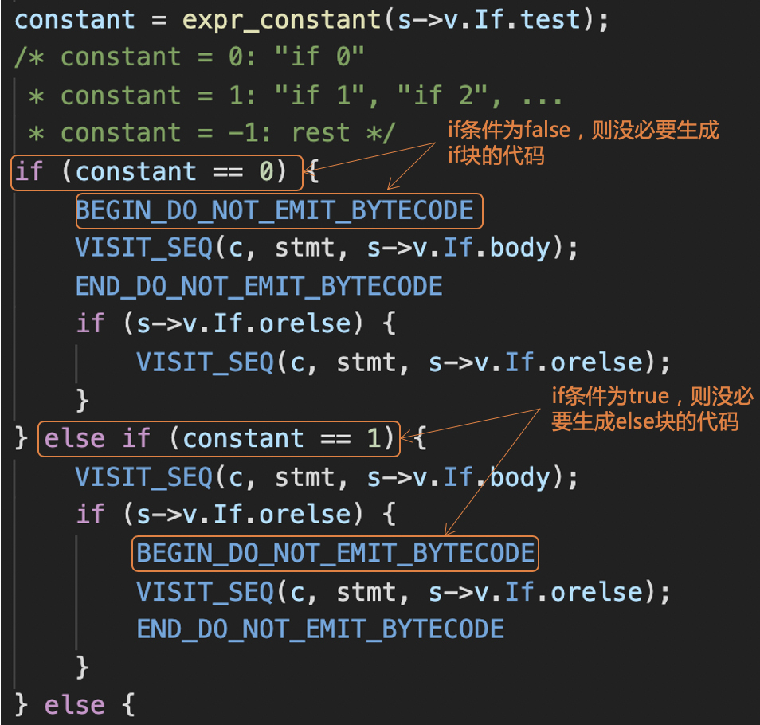
另一个优化机会，就是在字节码的基础上优化，这就是窥孔优化，其实现是在Python/peephole.c中。它能完成的优化包括：
- 把多个LOAD_CONST指令替换为一条加载常数元组的指令。
- 如果一个跳转指令，跳到return指令，那么可以把跳转指令直接替换成return指令。
- 如果一个条件跳转指令，跳到另一个条件跳转指令，则可以基于逻辑运算的规则做优化。比如，“x:JUMP_IF_FALSE_OR_POP y”和“y:JUMP_IF_FALSE_OR_POP z”可以直接简化为“x:JUMP_IF_FALSE_OR_POP z”。这是什么意思呢？第一句是依据栈顶的值做判断，如果为false就跳转到y。而第二句，继续依据栈顶的值做判断，如果为false就跳转到z。那么，简化后，可以直接从第一句跳转到z。
- 去掉return指令后面的代码。
- ……
在做优化的时候，窥孔优化器会去掉原来的指令，替换成新的指令。如果有多余出来的位置，则会先填充NOP指令，也就是不做任何操作。最后，才扫描一遍整个字节码，把NOP指令去掉，并且调整受影响的jump指令的参数。
课程小结
今天这一讲，我们继续深入探索Python的编译之旅。你需要记住以下几点：
- Python通过一个建立符号表的过程来做相关的语义分析，包括做引用消解和其他语义检查。由于Python可以不声明变量就直接使用，所以编译器要能识别出正确的“定义-使用”关系。
- 生成字节码的工作实际上包含了生成CFG、为每个基本块生成指令，以及把指令汇编成字节码，并生成PyCodeObject对象的过程。
- 窥孔优化器在字节码的基础上做了一些优化，研究这个程序，会让你对窥孔优化的认识变得具象起来。
按照惯例，我把这一讲的思维导图也整理出来了，供你参考：
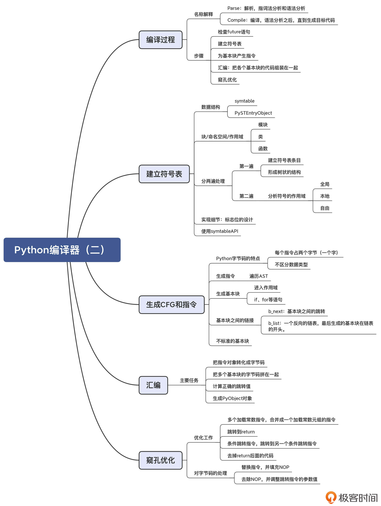
一课一思
在语义分析过程中，针对函数中的本地变量，Python编译器没有像Java编译器那样，一边添加符号，一边做引用消解。这是为什么？请在留言区分享你的观点。
如果你觉得有收获，欢迎你把今天的内容分享给更多的朋友。
参考资料
Python字节码的说明。
© 2019 - 2023 Liangliang Lee. Powered by gin and hexo-theme-book.